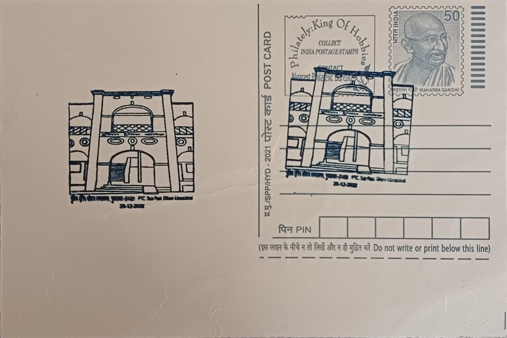

Dr. B. R. Ambedkar Uttar Pradesh Police Academy
डॉ. बी. आर. अंबेडकर उत्तर प्रदेश पुलिस अकादमी


The Police Training College at Moradabad traces its institutional lineage back to 1901, when it was first established to impart instruction in traffic management, criminal investigation, and other core policing duties within the United Provinces. In 1934, a government review known as the R. H. Williamson Committee recommended upgrading the existing college and establishing a separate training school at Moradabad specifically for non-gazetted police personnel, cementing the city's role as a hub for law-enforcement instruction. The present-day PTC Moradabad, operating under this expanded mandate, was formally constituted in 1978 as one of the training institutes functioning under the Uttar Pradesh Police Training Directorate, carrying forward a continuous institutional presence of well over a century in the city.
The institution was renamed in honour of Dr. Bhimrao Ramji Ambedkar (1891-1956), the principal architect of the Indian Constitution and the country's first Law Minister, whose jurisprudence placed equality before law and the dignity of marginalised citizens at the centre of the Indian republic. Attaching his name to a police training establishment signals a deliberate institutional emphasis on constitutional policing, human rights awareness, and procedural accountability alongside conventional law-and-order training. Today the academy functions as a key component of the Provincial Police Service's training apparatus in Uttar Pradesh, India's most populous state, preparing successive batches of gazetted and non-gazetted officers for field duty across a police force serving well over 200 million people.
A major modernisation of the campus began on 21 November 2020, when construction started on a new Dr. Bheemrao Ambedkar Police Academy complex at Moradabad at a sanctioned project cost of approximately Rs 86 crore, designed to replace and expand upon the older training infrastructure. The redeveloped campus was planned with a rated intake capacity of 170 gazetted officers and 500 non-gazetted officers at a time, housing dedicated lecture halls, simulation and tactical training areas, administrative blocks, dormitories, and recreational facilities intended to support both classroom instruction and physical training within a single integrated campus.
The academy's curriculum is notably broad for a state-level training centre, covering probationary training for IPS officers, basic training for probationary Deputy Superintendents of Police and District Commandants, and induction or refresher instruction for Home Guards personnel, Additional Reserve Officers, Armed Police Officers, Civil Fire Officers, and Sub-Inspectors of Civil Police, in addition to specialised short courses for gazetted ranks. This range allows a single institution to serve as a common training backbone across several distinct cadres of the state's police and allied uniformed services, rather than functioning solely as a basic-recruit training school.
The academy's post office, PTC Moradabad SO (PIN 244001), situated within the campus precincts in Moradabad district, reflects the scale of the institution as a self-contained residential training establishment rather than a mere administrative outpost. Administered under the Uttar Pradesh Police Training Directorate alongside other state training colleges, the academy at Moradabad today functions as the staff college component of the Provincial Police Service's training network, with its postal cancellation marking the continuing link between this constitutional namesake and the everyday administrative life of the campus it serves.
| Date of Introduction | December 29, 2022 |
|---|---|
| Address | Sub Postmaster, |
| PTC Moradabad SO, | |
| Moradabad (dt.), Uttar Pradesh - 244001. |